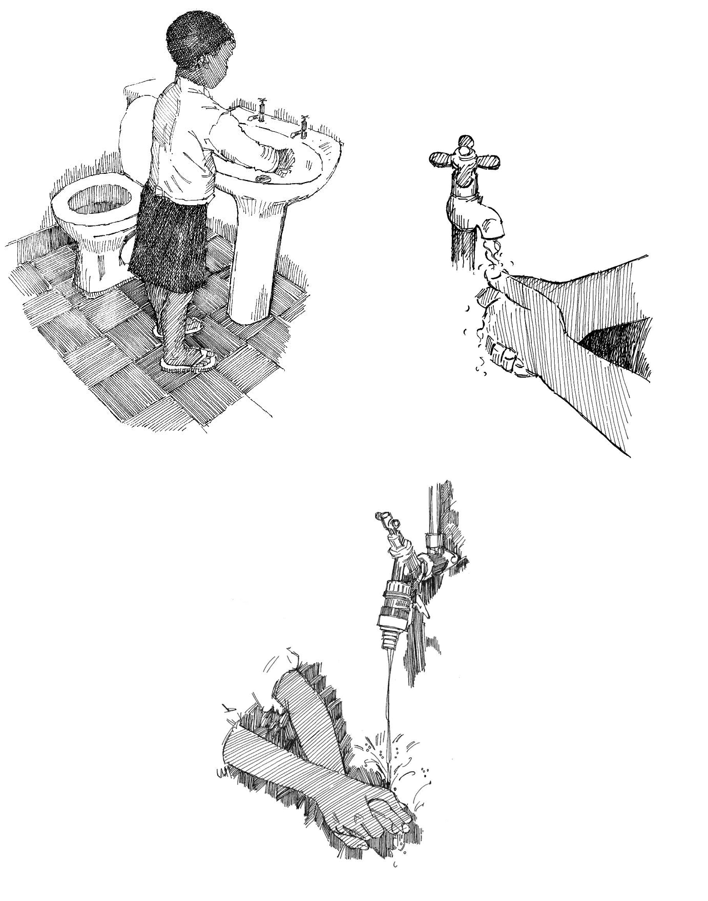

Aperçu
- Se laver les mains est l’un des moyens les plus efficaces d’éviter la propagation de nombreuses épidémies, notamment les maladies diarrhéiques .
- Se laver les mains est facile et tout le monde (y compris les enfants) peut le faire.
- Pour pouvoir se laver les mains, les gens ont besoin d’eau courante, de savon liquide ou de cendres, et de papier absorbant.
Quand se laver les mains
Lavez-vous les mains AVANT :
- De préparer ou de consommer des aliments
- De soigner une blessure (la vôtre ou celle de quelqu’un d’autre)
- De soigner un malade
- D’allaiter
Lavez-vous les mains APRÈS :
- Être allé aux toilettes
- Avoir lavé un enfant ou un nourrisson ou changé sa couche
- Avoir toussé ou éternué
- Avoir soigné un malade
- Être entré en contact avec un malade lors d’une épidémie (voir la fiche action 35 )
- Avoir manipulé de la viande crue
- Avoir touché un animal (y compris les animaux domestiques)
- Avoir manipulé des déchets ou tout objet susceptible d’être contaminé
Comment se laver les mains
- Se mouiller les mains et les frotter avec du savon ou des cendres.
- Frotter toutes les parties de vos mains l’une contre l’autre pendant 10 à 15 secondes.
- Utiliser beaucoup de force (presser ses mains l’une contre l’autre) et n’oublier aucune surface, y compris le dos des mains et l’espace entre les doigts.
- Bien se rincer les mains pour enlever tout le savon ou les cendres.
- Se sécher les mains avec du papier absorbant. S’il n’y en a pas, les secouer dans l’air jusqu’à ce qu’elles soient sèches.

1. Se mouiller les mains et utiliser du savon ou de la cendre. 2. Laver 10 à 15 secondes. 3. Bien se rincer les mains.